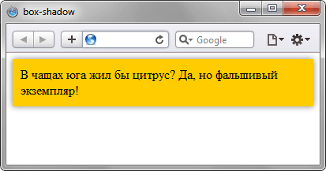

box-shadow
Добавляет тень к элементу. Допускается использовать несколько теней, указывая их параметры через запятую, при наложении теней первая тень в списке будет выше, последняя ниже. Если для элемента задается радиус скругления через свойство border-radius, то тень также получится с закруглёнными уголками. Добавление тени увеличивает ширину элемента, поэтому возможно появление горизонтальной полосы прокрутки в браузере.
Краткая информация
| Значение по умолчанию | none |
|---|---|
| Наследуется | Нет |
| Применяется | Ко всем элементам |
Синтаксис
box-shadow: none | <тень> [,<тень>]*где <тень>:
inset <сдвиг по x> <сдвиг по y> <радиус размытия> <растяжение> <цвет>
Значения
- none
- Отменяет добавление тени.
- inset
- Тень выводится внутри элемента. Необязательный параметр.
- сдвиг по x
- Смещение тени по горизонтали относительно элемента. Положительное значение этого параметра задаёт сдвиг тени вправо, отрицательное — влево. Обязательный параметр.
- сдвиг по y
- Смещение тени по вертикали относительно элемента. Положительное значение задаёт сдвиг тени вниз, отрицательное — вверх. Обязательный параметр.
- размытие
- Задаёт радиус размытия тени. Чем больше это значение, тем сильнее тень сглаживается, становится шире и светлее. Если этот параметр не задан, по умолчанию устанавливается равным 0, тень при этом будет чёткой, а не размытой.
- растяжение
- Положительное значение растягивает тень, отрицательное, наоборот, её сжимает. Если этот параметр не задан, по умолчанию устанавливается 0, при этом тень будет того же размера, что и элемент.
- цвет
- Цвет тени в любом доступном CSS формате, по умолчанию тень чёрная. Необязательный параметр.
Допускается указывать несколько теней, разделяя их параметры между собой запятой. Учитывается следующий порядок: первая тень в списке размещается на самом верху, последняя в списке — в самом низу.
Пример
<!DOCTYPE html>
<html>
<head>
<meta charset="utf-8">
<title>box-shadow</title>
<style>
.shadow {
background: #fc0; /* Цвет фона */
box-shadow: 0 0 10px rgba(0,0,0,0.5); /* Параметры тени */
padding: 10px;
}
</style>
</head>
<body>
<div class="shadow">В чащах юга жил бы цитрус? Да, но фальшивый экземпляр!</div>
</body>
</html>Результат примера показан на рис. 1.

Рис. 1. Вид тени в браузере Safari
Объектная модель
Объект.style.boxShadow
Примечание
Safari до версии 5.1, Chrome до версии 10.0, Android до версии 4.0 поддерживают свойство -webkit-box-shadow.
Firefox до версии 4.0 поддерживает свойство -moz-box-shadow.
Internet Explorer до версии 9.0 не поддерживает свойство box-shadow, взамен можно использовать нестандартное свойство filter:
filter: progid:DXImageTransform.Microsoft.dropshadow(offX=5, offY=5, color=#000000);Здесь: offX — смещение тени по горизонтали; offY — смещение тени по вертикали; color — цвет тени.
Применение фильтра dropshadow дает чёткую резкую тень, поэтому для эффекта размытия можно использовать фильтр shadow.
filter: progid:DXImageTransform.Microsoft.shadow(direction=120, color=#000000, strength=10);Здесь: direction — угол направления тени от 0 до 360°; color — цвет тени; strength — смещение тени в пикселях.
Спецификация
| Спецификация | Статус |
|---|---|
| CSS Backgrounds and Borders Module Level 3 | Возможная рекомендация |
Браузеры
| Internet Explorer | Chrome | Opera | Safari | Firefox | |||
| 9 | 1 | 10 | 10.5 | 3 | 5.1 | 3.5 | 4 |
| Android | Firefox Mobile | Opera Mobile | Safari Mobile | |||
| 1 | 4 | 3.5 | 4 | 11 | 3 | 5,1 |